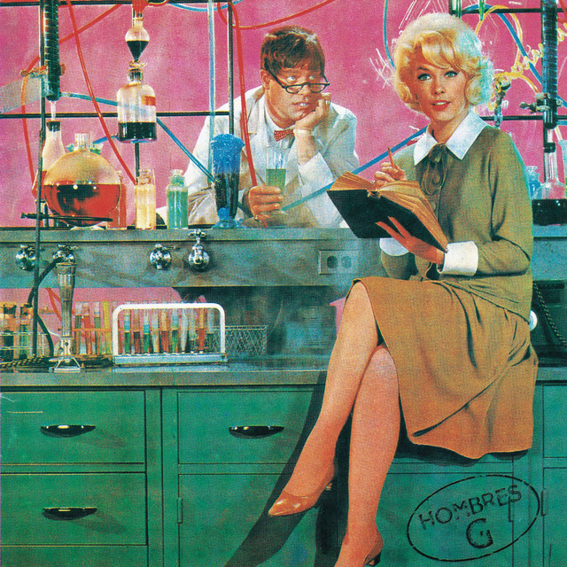
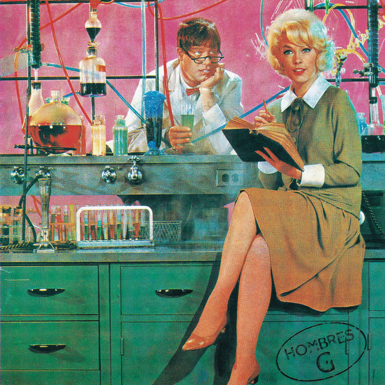

Historia
Hombres G es una banda espanyola de pop rock formada a Madrid el 1983, amb exits com "Devuelveme a mi chica" i "Visite nuestro bar".
Discografia
· Hombres G (1985)
· La cagaste... Burt Lancaster (1986)
· Agitar antes de usar (1988)
· Voy a pasarmelo bien (1989)
 

Integrants
· David Summers - veu i baix
· Rafael Gutiérrez - guitarra
· Dani Mezquita - guitarra
· Javi Molina - batería